library(ClustAssess)
library(Starlng)
library(monocle3)
library(Seurat)
library(SeuratData)
library(ggplot2)
library(dplyr)
library(patchwork)Presenting the Data
In this vignette we will demonstrate how to apply the main Starlng functionalities to single-cell RNA-seq data. We will exemplify this on the PBMC3k dataset.
InstallData("pbmc3k")
data("pbmc3k")
n_cores <- 1We repeated the procedures of downloading, qc filtering, normalising
and dimensionality reduction as described in the
ClustAssess vignette.
pbmc3k <- UpdateSeuratObject(pbmc3k)
pbmc3k <- PercentageFeatureSet(pbmc3k, pattern = "^MT-", col.name = "percent.mito")
pbmc3k <- PercentageFeatureSet(pbmc3k, pattern = "^RP[SL][[:digit:]]", col.name = "percent.rp")
all.index <- seq_len(nrow(pbmc3k))
MT.index <- grep(pattern = "^MT-", x = rownames(pbmc3k), value = FALSE)
RP.index <- grep(pattern = "^RP[SL][[:digit:]]", x = rownames(pbmc3k), value = FALSE)
pbmc3k <- pbmc3k[!((all.index %in% MT.index) | (all.index %in% RP.index)), ]
pbmc3k <- subset(
pbmc3k,
nFeature_RNA < 2000 & nCount_RNA < 2500 &
percent.mito < 7 & percent.rp > 7
)
pbmc3k <- NormalizeData(pbmc3k, verbose = FALSE)
pbmc3k <- FindVariableFeatures(
pbmc3k,
selection.method = "vst",
nfeatures = 3000,
verbose = FALSE
)
pbmc3k <- ScaleData(pbmc3k, features = rownames(pbmc3k), verbose = FALSE)
pbmc3k <- RunPCA(pbmc3k,
npcs = 30,
approx = FALSE,
verbose = FALSE
)
set.seed(42)
pbmc3k <- RunUMAP(pbmc3k,
reduction = "pca",
dims = 1:30,
n.neighbors = 30,
min.dist = 0.3,
metric = "cosine",
verbose = FALSE
)
pbmc3k <- FindNeighbors(pbmc3k, reduction = "pca", dims = 1:30, verbose = FALSE)
pbmc3k <- FindClusters(pbmc3k, resolution = 1, verbose = FALSE)
pbmc3k
#> An object of class Seurat
#> 13607 features across 2401 samples within 1 assay
#> Active assay: RNA (13607 features, 3000 variable features)
#> 3 layers present: counts, data, scale.data
#> 2 dimensional reductions calculated: pca, umapThe cells are already annotated, as shown in the following UMAP. The annotations can be used to confirm the downstream analysis.
DimPlot(pbmc3k, reduction = "umap", group.by = "seurat_annotations")
#> Warning: `aes_string()` was deprecated in ggplot2 3.0.0.
#> ℹ Please use tidy evaluation idioms with `aes()`.
#> ℹ See also `vignette("ggplot2-in-packages")` for more information.
#> ℹ The deprecated feature was likely used in the Seurat package.
#> Please report the issue at <https://github.com/satijalab/seurat/issues>.
#> This warning is displayed once per session.
#> Call `lifecycle::last_lifecycle_warnings()` to see where this warning was generated.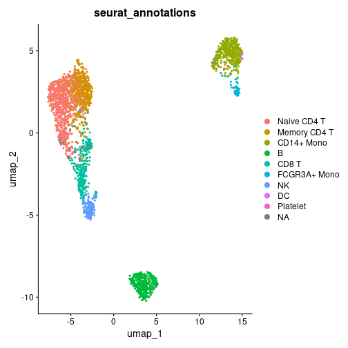
UMAP distribution of the Seurat cell-type annotations.
Running Starlng
Trajectory Inference
Starlng relies on the main principles from the Monocle3 package.
Therefore, the first steps consist in converting our object to Monocle3
and apply the first processing steps. For conversion, we have used the
create_monocle_default function from the
ClustAssess package.
monocle_obj <- create_monocle_default(
normalized_expression_matrix = GetAssayData(pbmc3k, assay = "RNA", layer = "data"),
metadata_df = pbmc3k@meta.data,
pca_embedding = Embeddings(pbmc3k, reduction = "pca"),
umap_embedding = Embeddings(pbmc3k, reduction = "umap")
)
plot_cells(
monocle_obj,
color_cells_by = "seurat_annotations",
cell_size = 1,
group_label_size = 6
)
#> No trajectory to plot. Has learn_graph() been called yet?
#> Warning: The `size` argument of `element_line()` is deprecated as of ggplot2 3.4.0.
#> ℹ Please use the `linewidth` argument instead.
#> ℹ The deprecated feature was likely used in the monocle3 package.
#> Please report the issue to the authors.
#> This warning is displayed once per session.
#> Call `lifecycle::last_lifecycle_warnings()` to see where this warning was generated.
#> Warning: Removed 1 row containing missing values or values outside the scale range (`geom_text_repel()`).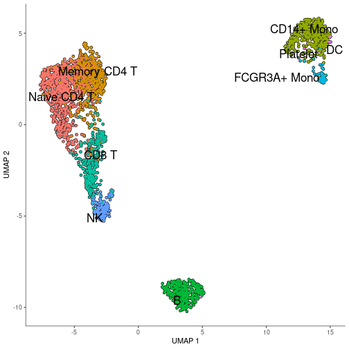
UMAP distribution of cell-types, generated by Monocle3.
Once the Monocle3 object is created, we apply the SimplePPT algorithm to infer the trajectory graph. The method relies on defining a number of center points that represent each subpopulation. Monocle3 fixes an adaptive policy defined as . Changing the factor can improve the granularity of the branching, as it can be seen in the following comparison. Therefore, Starlng provides an wrapper that allows changing this variable.
n_nodes <- c(10, 30)
plot_list <- list()
for (n_node in n_nodes) {
monocle_obj <- custom_learn_graph(
mon_obj = monocle_obj,
nodes_per_log10_cells = n_node,
learn_graph_controls = list(
eps = 1e-5,
maxiter = 100,
prune_graph = TRUE
),
use_partition = FALSE,
use_closed_loops = FALSE
)
plot_list[[as.character(n_node)]] <- plot_cells(
monocle_obj,
color_cells_by = "seurat_annotations",
cell_size = 1) +
ggtitle(paste0("Trajectory inferred on\n", n_node, " per log10(#cells)"))
}
#> Warning: Using `size` aesthetic for lines was deprecated in ggplot2 3.4.0.
#> ℹ Please use `linewidth` instead.
#> ℹ The deprecated feature was likely used in the monocle3 package.
#> Please report the issue to the authors.
#> This warning is displayed once per session.
#> Call `lifecycle::last_lifecycle_warnings()` to see where this warning was generated.
wrap_plots(plot_list, ncol = 2)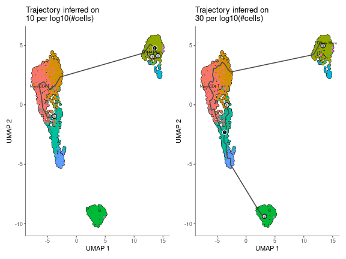
Impact of the number of nodes per log10(#cells) on the inferred trajectory graph.
Pseudotime Ordering
The graph structure allows defining an ordering of the centroid points (and subsequently of each cell). Given that the graph is undirected, choosing the starting point can be arbitrary. Monocle3’s approach is to let the user select the root interactively using a ShinyApp. Starlng introduces an objective approach that determines the root point that maximises the pseudotime range. We justify this objective understanding that every minor change between neighbouring subtypes can provide useful insights. For this, we determine the diameter of the graph, which will represent the main trajectory of the data. We will select the trajectory leaf that belongs to the half with a weaker branching effect.
trajectory_object <- get_trajectory_object(monocle_obj)
recommended_pseudotime <- get_pseudotime_recommendation(monocle_obj)Starlng proposes a data-driven way to determine the root point as well. The user can utilise either a metadata category or a group of genes (using a voting scheme) and apply Starlng to determine a small set of cells that would represent the provided population. By default, the identification of the optimal pseudotime range is accompanied by a recommendation of the metadata group that can be used to obtain a similar result. In this case, the CD14+ Mono cells were selected as the most appropriate starting point.
umap_df <- as.data.frame(reducedDims(monocle_obj)$UMAP)
mtd_df <- colData(monocle_obj)
umap_df$pseudotime <- recommended_pseudotime$recommended_pseudotime
recommended_mtd_name <- recommended_pseudotime$recommended_mtd_name
recommended_mtd_group <- recommended_pseudotime$recommended_mtd_group
mtd_group <- rownames(mtd_df)[mtd_df[[recommended_mtd_name]] == recommended_mtd_group]
mtd_group <- mtd_group[!is.na(mtd_group)]
recommended_starting_point <- filter_central_cells_from_group(
cell_group = mtd_group,
umap_embedding = umap_df[, c("UMAP_1", "UMAP_2")],
n_points = 5
)
str(recommended_pseudotime)
#> List of 3
#> $ recommended_mtd_name : chr "RNA_snn_res.1"
#> $ recommended_mtd_group : chr "2"
#> $ recommended_pseudotime: Named num [1:2401] 31.43482 16.81102 0.00627 32.076 18.75898 ...
#> ..- attr(*, "names")= chr [1:2401] "AAACATACAACCAC" "AAACATTGATCAGC" "AAACCGTGCTTCCG" "AAACCGTGTATGCG" ...
ggplot() +
geom_point(
data = umap_df,
aes(x = UMAP_1, y = UMAP_2, color = pseudotime),
size = 1, alpha = 0.5) +
theme_classic() +
scale_color_viridis_c() +
geom_point(
data = umap_df[recommended_starting_point, ],
aes(x = UMAP_1, y = UMAP_2),
color = "red", size = 3) +
ggtitle("UMAP Colored by Recommended Pseudotime\n
(Red cells recommended as Starting Point)") +
plot_trajectory_graph(trajectory_object, plot_nodes = 0, edge_size = 1)$layers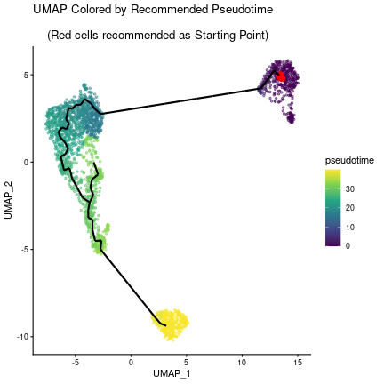
UMAP distribution of the recommended pseudotime (the recommended starting point is highlighted in red).
Autocorrelation Scoring
Another use of the trajectory graph is to describe a space that can be further utilised to infer autocorrelation patterns of each gene using the Moran’s I test.
autocorrelation_result <- monocle3::graph_test(
cds = monocle_obj,
neighbor_graph = "principal_graph",
cores = n_cores,
verbose = FALSE
)The Moran’s I values range between -1 and 1. Values close to 0 reflect a random localisation pattern of the cells expressing a gene. Positive values denote that cells are clustered in more compact groups. The presence of noise, as well as the plasticity of the cells increases the difficulty of identifying genes that are well clustered. As it can be observed in the following plot, the number of genes decreases exponentially as the Moran’s I increases.
rownames(autocorrelation_result) <- autocorrelation_result$gene_short_name
autocorrelation_result <- autocorrelation_result[!is.na(autocorrelation_result$morans_I), ]
autocorrelation_result <- autocorrelation_result %>%
dplyr::select(c("gene_short_name", "morans_test_statistic", "morans_I", "q_value")) %>%
dplyr::arrange(dplyr::desc(.data$morans_I))
morans_I_bins <- seq(-1, 1, by = 0.05)
autocorrelation_result$morans_I_bin <- cut(
autocorrelation_result$morans_I,
breaks = morans_I_bins,
include.lowest = TRUE
)
autocorrelation_result$morans_I_bin <- as.character(autocorrelation_result$morans_I_bin)
autocorrelation_counts <- autocorrelation_result %>%
group_by(morans_I_bin) %>%
summarise(count = n())
monocle_obj <- monocle_obj[rownames(autocorrelation_result), ]
ggplot(autocorrelation_counts, aes(x = morans_I_bin, y = count)) +
geom_histogram(stat = "identity") +
theme_classic() +
theme(axis.text.x = element_text(angle = 45, hjust = 1)) +
scale_y_log10() +
ylab("Number of Genes (log10)") +
ggtitle("Distribution of Moran's I Values")
#> Warning in geom_histogram(stat = "identity"): Ignoring unknown parameters: `binwidth` and `bins`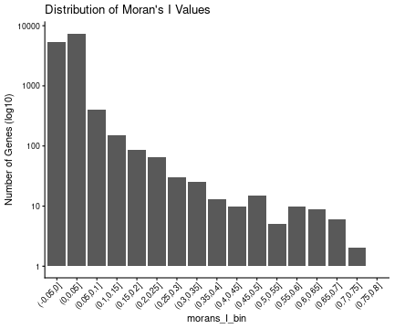
Distribution of Moran’s I values across all genes.
head(autocorrelation_result)
#> gene_short_name morans_test_statistic morans_I q_value morans_I_bin
#> CD79A CD79A 133.1675 0.7763404 0 (0.75,0.8]
#> LGALS2 LGALS2 125.5914 0.7322184 0 (0.7,0.75]
#> S100A8 S100A8 123.0203 0.7174263 0 (0.7,0.75]
#> GZMB GZMB 117.6531 0.6855200 0 (0.65,0.7]
#> TYROBP TYROBP 115.9277 0.6762062 0 (0.65,0.7]
#> TCL1A TCL1A 113.0855 0.6587378 0 (0.65,0.7]We define other usual gene statistics, such as average expression, percentage of cells expressed. The following scatterplot suggests that these metrics can’t act as strong predictors of the autocorrelation score.
expr_matrix <- monocle_obj@assays@data$normalized_data
autocorrelation_result$average_expression <- Matrix::rowMeans(expr_matrix)
avg_non_zero <- apply(expr_matrix, 1, function(x) mean(x > 0))
autocorrelation_result$average_expression_non_zero <- avg_non_zero
autocorrelation_result$n_expressed_cells <- rowSums(expr_matrix > 0)
perc_cells <- autocorrelation_result$n_expressed_cells / ncol(expr_matrix) * 100
autocorrelation_result$percent_expressed_cells <- perc_cells
autocorrelation_result$p_val <- -log10(autocorrelation_result$q_value + 1e-10)
autocorrelation_result[autocorrelation_result$q_value >= 0.05, "p_val"] <- NA
head(autocorrelation_result)
#> gene_short_name morans_test_statistic morans_I q_value morans_I_bin average_expression
#> CD79A CD79A 133.1675 0.7763404 0 (0.75,0.8] 0.5229236
#> LGALS2 LGALS2 125.5914 0.7322184 0 (0.7,0.75] 0.5258614
#> S100A8 S100A8 123.0203 0.7174263 0 (0.7,0.75] 0.9011146
#> GZMB GZMB 117.6531 0.6855200 0 (0.65,0.7] 0.3940139
#> TYROBP TYROBP 115.9277 0.6762062 0 (0.65,0.7] 1.1669515
#> TCL1A TCL1A 113.0855 0.6587378 0 (0.65,0.7] 0.3296890
#> average_expression_non_zero n_expressed_cells percent_expressed_cells p_val
#> CD79A 0.1620158 389 16.20158 10
#> LGALS2 0.1757601 422 17.57601 10
#> S100A8 0.2411495 579 24.11495 10
#> GZMB 0.1187005 285 11.87005 10
#> TYROBP 0.3406914 818 34.06914 10
#> TCL1A 0.1049563 252 10.49563 10
ggplot(autocorrelation_result, aes(
x = average_expression_non_zero,
y = morans_I,
size = percent_expressed_cells,
colour = p_val)) +
geom_point() +
theme_classic() +
xlab("Average Non-Zero Expression") +
ylab("Moran's I") +
ggtitle("Moran's I vs Average Non-Zero Expression") +
scale_colour_viridis_c()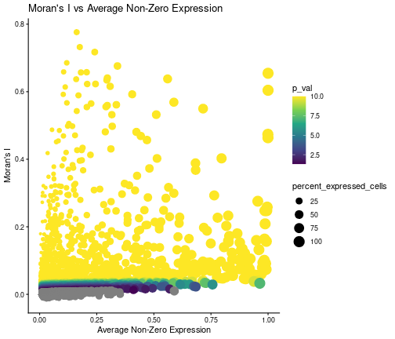
Scatterplot showing the relationship between the Moran’s I and the average non-zero expression of each gene. The size is proportional to the percentage of cells expressing the gene, while the colour is proportional to the -log10(q-value).
Identification of Gene Modules
For the following analysis, we will filter the genes based on the significance of their autocorrelation patterns. We selected a significance pvalue threshold of 0.05 and a Moran’s I threshold of 0.1, in an attempt to describe a large enough landscape of signal genes. We note that other threshold I values can be appropriate and could be investigated in the analysis.
We process the filtered genes by calculating their feature loading after performing the Principal Component Analysis at cell level.
remaining_genes <- autocorrelation_result %>%
filter(q_value < 0.05 & morans_I > 0.1, ) %>%
rownames()
gene_loadings <- get_feature_loading(
expr_matrix = expr_matrix[remaining_genes, ],
npcs = 30, approx = FALSE)The reduced space is then given as input for the clustering pipeline, which follows the PhenoGraph framework (also used by default in Monocle3). Additionally, we run the pipeline by varying the number of neighbours (used to infer the gene adjacency graph based on neighbourhood overlap) and the resolution parameter (which directly impacts the number of resulting clusters). Each configuration is run 100 times with different random seed initialisations.
The pipeline can be run in parallel across all platforms, using PSOCK clusters.
if (n_cores > 1) {
cl <- parallel::makePSOCKcluster(n_cores)
doParallel::registerDoParallel(cl)
}
clustering_assessment <- clustering_pipeline(
embedding = gene_loadings,
n_neighbours = seq(5, 50, by = 5),
graph_type = "snn",
prune_value = -1,
resolutions = list(
"RBConfigurationVertexPartition" = seq(from = 0.1, to = 2, by = 0.1)
),
number_iterations = 5,
number_repetitions = 100,
merge_identical_partitions = TRUE
)
if (n_cores > 1) {
parallel::stopCluster(cl)
foreach::registerDoSEQ()
}We utilise the clustering assessment principles from ClustAssess to infer the robustness of results for the different number of nearest neighbours. We use the same two-step approach, that firstly keeps the upper half of configurations ordered by the median Element-Centric Consistency (ECC) and the selects the configuration with the lowest ECC IQR.
per_n_neigh_ecc <- do.call(rbind,
lapply(names(clustering_assessment$clusters_list), function(n_neigh) {
x <- clustering_assessment$clusters_list[[n_neigh]]
data.frame(
ECC = x$RBConfigurationVertexPartition$overall_ecc,
n_neighbours = n_neigh
)
}))
per_n_neigh_ecc$n_neighbours <- factor(
per_n_neigh_ecc$n_neighbours,
levels = as.character(seq(5, 50, by = 5))
)
per_n_neigh_stats <- per_n_neigh_ecc %>%
group_by(n_neighbours) %>%
summarise(
median_ecc = median(ECC),
iqr_ecc = IQR(ECC)
)
# lowest median from the first half
median_threshold <- sort(per_n_neigh_stats$median_ecc)[ceiling(nrow(per_n_neigh_stats) / 2)]
iqr_text <- per_n_neigh_stats %>%
filter(median_ecc >= median_threshold) %>%
arrange(iqr_ecc) %>%
mutate(
iqr_text = paste0("IQR: ", round(iqr_ecc, 3)),
text_colour = ifelse(iqr_ecc == min(iqr_ecc), "#519451", "black")
)
max_y <- max(per_n_neigh_ecc$ECC) * 1.01
ggplot(per_n_neigh_ecc, aes(x = n_neighbours, y = ECC)) +
geom_boxplot() +
theme_classic() +
xlab("Number of Neighbours") +
ylab("Overall ECC") +
geom_hline(yintercept = median_threshold, linetype = "dashed", color = "red") +
geom_text(
data = iqr_text,
aes(x = n_neighbours, y = max_y, label = iqr_text, color = text_colour),
vjust = -0.5,
size = 3
) +
scale_color_identity() +
ggtitle("ECC vs Number of Neighbours")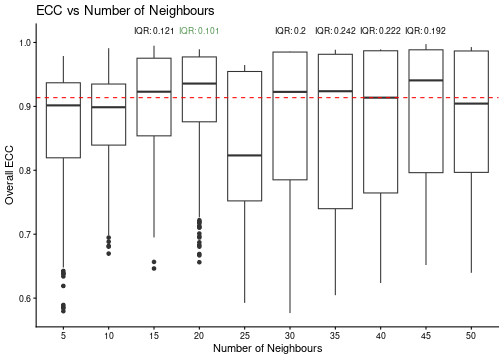
Boxplot showing the ECC-derived stability of the number of neighbours. The red dashed line represents the median ECC threshold, while the green text indicates the IQR for each configuration.
best_configuration <- select_best_configuration(clustering_assessment$clusters_list)
print(best_configuration)
#> [1] "20" "RBConfigurationVertexPartition"For this data, the optimal number of nearest neighbours is 20. We fix these parameters and calculate the gene UMAP.
best_nn <- best_configuration[[1]]
best_quality <- best_configuration[[2]]
gene_adj_matrix <- clustering_assessment$embedding_list$adj_matrix[[best_nn]]
set.seed(42)
gene_umap <- uwot::umap(
gene_loadings,
n_neighbors = as.numeric(best_nn),
metric = "cosine",
n_components = 2,
verbose = FALSE
)
gene_umap <- as.data.frame(gene_umap)
colnames(gene_umap) <- paste0("Gene_UMAP_", 1:2)
clusters_list <- clustering_assessment$clusters_list[[best_nn]][[best_quality]]The last step of the clustering assessment is to infer the number of modules that produce similar results across multiple runs. For this, we consider a number of gene clusters (defined as modules) to be stable if the average ECC score is greater than 0.9 (from a maximum of 1) and if its associated partition appear at least 30 times (to ensure a statistically-relevant sample of observations).
per_k_ecc <- do.call(rbind, lapply(names(clusters_list$k), function(k) {
x <- clusters_list$k[[k]]
data.frame(
ECC = x$ecc,
k = k
)
}))
per_k_ecc$k <- factor(per_k_ecc$k, levels = names(clusters_list$k))
average_ecc_per_k <- per_k_ecc %>%
group_by(k) %>%
summarise(average_ecc = mean(ECC))
max_y <- max(per_k_ecc$ECC) * 1.03
average_ecc_per_k$frequency <- sapply(names(clusters_list$k), function(k) {
sum(sapply(clusters_list$k[[k]]$partitions, function(partition) partition$freq))
})
average_ecc_per_k_text <- average_ecc_per_k %>%
arrange(frequency) %>%
filter(average_ecc >= 0.9) %>%
mutate(
frequency_text = paste0("Freq:\n", frequency),
text_colour = ifelse(frequency < 30, "black", "#519451")
)
ggplot(per_k_ecc, aes(x = k, y = ECC)) +
geom_boxplot() +
geom_point(
data = average_ecc_per_k,
aes(x = k, y = average_ecc),
color = "blue",
size = 2, shape = 22) +
theme_classic() +
xlab("k") +
ylab("ECC") +
geom_hline(yintercept = 0.9, linetype = "dashed", color = "red") +
geom_text(
data = average_ecc_per_k_text,
aes(x = k, y = max_y, label = frequency_text, color = text_colour),
vjust = -0.5,
size = 3
) +
scale_color_identity() +
coord_cartesian(ylim = c(0.15, 1.09))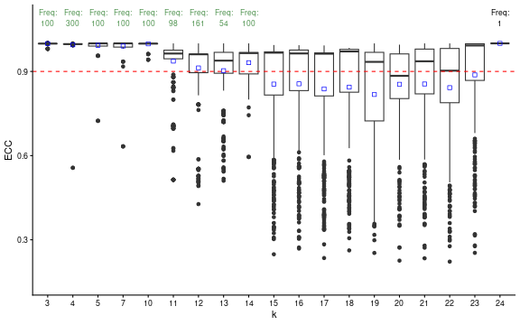
Boxplot showing the ECC-derived stability of the number of modules. The red dashed line represents the median ECC threshold, while the green text indicates the frequency for each configuration.
ggtitle("ECC vs k for the Best Configuration")
#> <ggplot2::labels> List of 1
#> $ title: chr "ECC vs k for the Best Configuration"
stable_clusters <- ClustAssess::choose_stable_clusters(
clusters_list = clusters_list$k,
ecc_threshold = 0.9,
freq_threshold = 30,
summary_function = mean
)
print(names(stable_clusters))
#> [1] "3" "4" "5" "7" "10" "11" "12" "13" "14"We notice that the highest number of modules is 14. We will select this value for the following analysis.
chosen_n_modules <- names(stable_clusters)[length(stable_clusters)]
module_names <- as.character(seq_len(chosen_n_modules))
chosen_clustering <- setNames(
stable_clusters[[chosen_n_modules]]$partitions[[1]]$mb,
remaining_genes
)
module_colours <- setNames(qualpalr::qualpal(length(module_names))$hex, module_names)
module_list <- split(names(chosen_clustering), chosen_clustering)
print(summary(factor(chosen_clustering)))
#> 1 2 3 4 5 6 7 8 9 10 11 12 13 14
#> 76 72 67 66 66 21 13 13 11 8 8 6 1 1Module Analysis
Voting Scheme
We can determine the population described by each gene module using a
voting scheme approach. This voting scheme selects the cells that
express at least n_coexpressed_thresh genes above a given
threshold (alternative, a percentile can be provided to infer a dynamic
threshold). In this first example, we select all cells that express at
least one gene from the module. We remark that the voting scheme has
been too lenient.
module_binary_voting <- do.call(cbind, lapply(module_names, function(module) {
genes_in_module <- names(chosen_clustering)[chosen_clustering == module]
if (length(genes_in_module) == 0) {
return(rep(NA, ncol(expr_matrix)))
}
as.character(voting_scheme(
expression_matrix = expr_matrix[genes_in_module, , drop = FALSE],
thresh_percentile = 0,
thresh_value = 0,
n_coexpressed_thresh = 1,
summary_function = NULL
))
}))
colnames(module_binary_voting) <- module_names
plot_umap_gene_modules(
module_summaries = module_binary_voting,
umap_embedding = umap_df[, c("UMAP_1", "UMAP_2")],
trajectory_object = trajectory_object,
n_columns = 3,
combine_legend = TRUE,
scale_values = FALSE,
continuous_colors = cont_colours,
show_labels = FALSE,
legend_text_size = 20,
legend_key_size = 5
)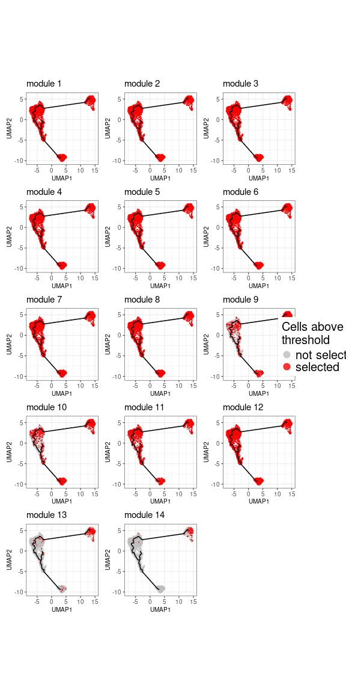
UMAP distribution of the populations defined by each gene module. The cells that express at least one gene from the module are highlighted in red.
The second approach would be to aggregate the expression across all genes belonging to one module. For comparability across module, we scale the values between 0 and 1. This approach reveal clearer patterns for each module.
module_avg_expression <- do.call(cbind, lapply(module_names, function(module) {
genes_in_module <- names(chosen_clustering)[chosen_clustering == module]
if (length(genes_in_module) == 0) {
return(rep(NA, ncol(expr_matrix)))
}
expr_value <- voting_scheme(
expression_matrix = expr_matrix[genes_in_module, , drop = FALSE],
thresh_percentile = 0,
thresh_value = 0,
n_coexpressed_thresh = 1,
summary_function = mean
)
(expr_value - min(expr_value)) / (max(expr_value) - min(expr_value))
}))
colnames(module_avg_expression) <- module_names
white_red_colours <- c("grey85", "#FFF7EC", "#FEE8C8", "#FDD49E",
"#FDBB84", "#FC8D59", "#EF6548", "#D7301F", "#B30000", "#7F0000")
plot_umap_gene_modules(
module_summaries = module_avg_expression,
umap_embedding = umap_df[, c("UMAP_1", "UMAP_2")],
trajectory_object = trajectory_object,
n_columns = 3,
combine_legend = TRUE,
scale_values = TRUE,
continuous_colors = white_red_colours,
show_labels = FALSE,
legend_text_size = 20,
colourbar_height = 200,
cell_size = 1,
cell_sort_order = "highest"
)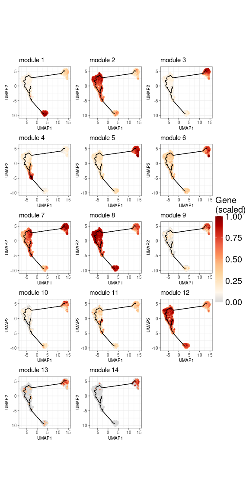
UMAP distribution of the populations defined by each gene module. The expression is aggregated across all genes belonging to the module and scaled between 0 and 1.
Starlng provides a procedure that identifies the core cells that define the module-specific population. For this, we can either use a threshold for the scaled values (defaults to 0.5) or a percentage of the top cells, ordered by the average expression.
scale_threshold <- 0.5
psd_mask <- !is.na(umap_df$pseudotime)
module_avg_expression <- split(module_avg_expression, col(module_avg_expression))
names(module_avg_expression) <- module_names
module_mask <- build_module_masks(
module_summ = module_avg_expression,
psd_mask = psd_mask,
scale_threshold = scale_threshold,
top_cells_percent = 100
)
names(module_mask) <- module_namesGenerating Module Statistics
The previously-determined populations can be further used to generated per-module stats, such as the position across the pseudotime trajectory, or the average UMAP intra-cluster distance.
modules_stats <- get_module_stats(
module_summ = module_avg_expression,
module_mask = module_mask,
psd_value = umap_df$pseudotime,
umap_df = umap_df[, c("UMAP_1", "UMAP_2")],
centroid = TRUE
)
modules_stats_summary <- summarise_module_stats(
modules_stats = modules_stats,
gene_modules = module_list
)
head(modules_stats_summary)
#> module n_genes n_cells avg_summary median_pseudotime iqr_pseudotime median_umap_distance
#> 1 1 76 325 0.723 39.516 0.001 0.728
#> 10 10 8 54 0.608 0.006 0.135 0.978
#> 11 11 8 27 0.617 31.685 2.045 1.840
#> 12 12 6 1041 0.649 21.863 10.982 3.319
#> 13 13 1 54 0.613 0.024 1.503 1.602
#> 14 14 1 63 0.654 0.006 0.001 1.270Mapping against present metadata We can also visualise the overlap between the module-induced populations and existing metadata. In the following bubbleplot we notice that some modules are specific to a certain group (for example, module 1 to B cells or module 4 to NK cells), while some modules are rather scattered across multiple clusters (for example, module 8 is highly expressed in B cells, Naive CD4 T cells, Memory CD4 T cells).
mtd_value <- as.character(monocle_obj@colData[, "seurat_annotations"])
mtd_order <- order_metadata_groups_by_pseudotime(mtd_value, umap_df$pseudotime)
plot_module_pseudobulk_expression(
module_expression_summary = module_avg_expression,
cell_metadata = mtd_value,
mtd_order = rev(mtd_order),
scale = TRUE,
cap_value = 2.5
)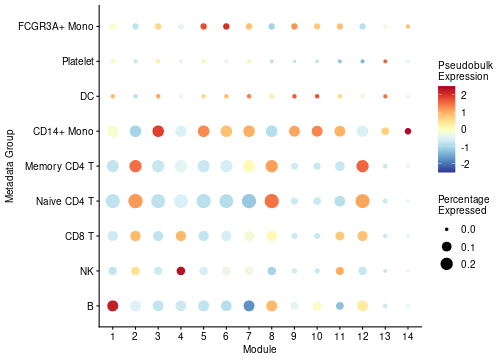
Bubbleplot showing the pseudobulk average expression of each module across the Seurat cell-type annotations. The size is proportional to the number of cells in each group, while the colour is proportional to the average expression.
Detect Outlier Modules
The previous remark implies that some modules might be too scattered for them to provide relevant biological insights. Based on this observation, we devised a method that aims to detect outlier modules by analysing the pseudotime IQR and average UMAP distance patterns. Modules that have an absolute MAD Z score for both these metrics will be flagged as outliers. Supplimentary, we try to compare the performance of the modules against a baseline. For this, we calculate the value of these two metrics by considering the entire dataset being a single population. If a module lies in 85% of the baseline values, we conclude that it’s behaviour isn’t too different than a random assignation, hence the module is considered an outlier.
Furthermore, we introduce an intermediary category of redundant modules. Some gene clusters that were not flagged as outlier are still spanning across a high range of the pseudotime landscape. Usually, the area covered by these clusters are better described by multiple modules that represent smaller portions. To determine the redundancy, we sort the modules based on their pseudotime IQR (or the average UMAP distance). If a module cover a new part of the dataset with at least half of its associated cells, it will be considered non-redundant. Otherwise, we calculate a harmonic mean of the added coverage wrt the entire dataset and the proportion of cells from the module-specific population that are involved in this process. If this score is worse than the median of the scores of the modules already defined as non-redundant, the module will be classified as redundant. In our case, the following plot shows that module 2 was added despite its high IQR because it covers a significant amount of population that has not been described by the previous modules.
umap_median_dist <- median(calculate_umap_average_distance(umap_df[, 1:2]))
outlier_assessment <- detect_outlier(
modules_stats = modules_stats_summary,
cell_masks = module_mask,
psd_value = umap_df$pseudotime,
umap_dist_threshold = umap_median_dist * 0.85
)
coverage_df <- outlier_assessment$coverage_evolution_df %>% arrange(module_iqr)
coverage_df$cumulative_coverage <- cumsum(coverage_df$coverage_added)
ggplot(coverage_df, aes(
x = module_iqr,
y = cumulative_coverage,
size = f1_score, colour = median_umap_distance)) +
geom_point() +
geom_line(colour = "black", linewidth = 1) +
theme_classic() +
xlab("Module IQR") +
ylab("Cumulative Coverage") +
ggtitle("Outlier Detection Assessment") +
scale_colour_viridis_c() +
scale_size_continuous(range = c(3, 10)) +
ggrepel::geom_label_repel(
data = coverage_df,
aes(label = added_module),
colour = "black",
size = 6
) 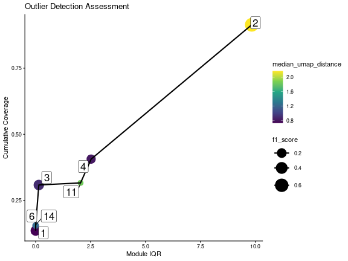
Scatterplot showing the relationship between the module pseudotime IQR and the average UMAP distance. The size is proportional to the number of cells in the module-specific population, while the colour is proportional to the median pseudotime value. The red dashed lines represent the median values for each metric.
We note the presence of high overlaps between some redundant and non-redundant modules. This suggests that the redundancy should not be interpreted as a strong discarding of the module, but as a general recommendation.
outlier_output <- outlier_assessment$outlier_output
modules_stats_summary$is_outlier <- outlier_output[rownames(modules_stats_summary)]
selected_modules <- modules_stats_summary %>%
filter(is_outlier == "no") %>%
arrange(median_pseudotime) %>%
pull(module)
print(modules_stats_summary %>%
arrange(median_pseudotime, iqr_pseudotime, median_umap_distance) %>%
select(module, is_outlier))
#> module is_outlier
#> 6 6 no
#> 14 14 no
#> 9 9 redundant
#> 10 10 redundant
#> 3 3 no
#> 5 5 redundant
#> 13 13 redundant
#> 7 7 yes
#> 2 2 no
#> 12 12 yes
#> 8 8 yes
#> 11 11 no
#> 4 4 no
#> 1 1 noOnce the uninformative modules were discarded, Starlng determines the transition relationship between the remaining gene clusters. This is done using the trajectory graph: each module is associated with a node on the graph based on the median position. We then draw edges between nodes that are neighbours on the same trajectory (based on the removal of the other vertices). If cycles are formed, we remove the edges between the nodes that are that farthest with respect to the UMAP space.
closest_node_per_module <- get_closest_node_to_module(
trajectory_object = trajectory_object,
cell_umap = umap_df[, c("UMAP_1", "UMAP_2")],
module_expr = module_avg_expression[selected_modules],
expression_threshold = scale_threshold
)
module_medians <- get_module_centroid(split(module_mask, row(module_mask)), umap_df[, 1:2])
module_adjacency <- get_module_transitions(
trajectory_object,
closest_node_per_module,
start_node = NULL,
similarity_values = module_medians[selected_modules, , drop = FALSE]
)
plot_module_transitions(
module_adj_matrix = module_adjacency,
closest_module = closest_node_per_module
)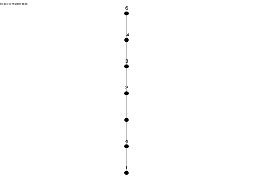
Graph showing the transition between modules based on the trajectory graph.
Other Module Visualisation Plots
Starlng offers multiple ways to visualise the expression patterns of the remaining modules. One of them is a cell-resolution heatmap, ordered by the pseudotime values. This visualisation confirms that most of the data is well represented by the chosen modules.
generate_cell_heatmap(
expression_matrix = expr_matrix,
gene_family_list = module_list[selected_modules],
metadata_df = data.frame(
seurat_annotations = mtd_value,
pseudotime = umap_df$pseudotime,
row.names = rownames(umap_df)
),
metadata_name = "seurat_annotations",
apply_scale = TRUE,
k_smooth = 30,
cap = 2,
continuous_colors = grDevices::colorRampPalette(c("blue", "white", "red"))(100)
)
#> `use_raster` is automatically set to TRUE for a matrix with more than 2000 columns You can control
#> `use_raster` argument by explicitly setting TRUE/FALSE to it.
#>
#> Set `ht_opt$message = FALSE` to turn off this message.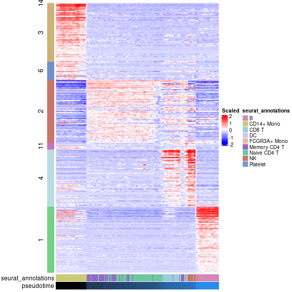
Heatmap showing the expression of the selected modules across the pseudotime trajectory. The cells are ordered by their pseudotime values, while the modules are ordered by their median pseudotime value.
Another visualisation relies on fitting regression splines (using GAM) that describe the evolution of the module average expression over the pseudotime. This plot also suggests that the second module plays an important role in defining the transitioning population.
plot_module_trends_over_pseudotime(
expression_list = module_avg_expression[selected_modules],
pseudotime = umap_df$pseudotime,
module_colours = module_colours
) + theme(legend.position = "none")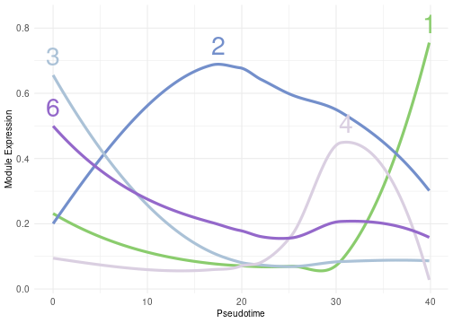
Lineplot showing the evolution of the average expression of each module across the pseudotime trajectory. The lines are fitted using GAM splines, while the shaded area represents the 95% confidence interval.
Hub Genes
The next step that Starlng follows is to define the impact of each gene in the overall pattern of expression of the module it belongs to. We defined this as the product between the fraction to the maximum weight of intra-module edges and a f1 score that takes into account the overlap between the module-specific population and the gene-specific population. For each module, we sort the genes decreasing based on this compound score. The genes with the highest values act as hubs inside the module.
inside_module_weights <- get_per_module_weight(
gene_adj_matrix = gene_adj_matrix,
gene_modules = module_list
)
hub_score_df <- get_gene_overlap_stat(
expr_matrix = expr_matrix,
gene_modules = module_list,
module_expr = module_avg_expression,
module_expression_threshold = scale_threshold,
gene_expression_percentile = 0.5,
gene_expression_threshold = 0,
scale = TRUE,
total_weight = inside_module_weights
)
hub_score_df$module <- chosen_clustering[rownames(hub_score_df)]
hub_score_df$gene <- rownames(hub_score_df)
hub_genes <- hub_score_df %>%
group_by(module) %>%
slice_max(combined_score, n = 3) %>%
filter(module %in% selected_modules)
print(hub_genes)
#> # A tibble: 19 × 7
#> # Groups: module [7]
#> precision_population recall_population f1_score_population total_weight combined_score module gene
#> <dbl> <dbl> <dbl> <dbl> <dbl> <int> <chr>
#> 1 0.953 0.498 0.655 1 0.655 1 HLA-DRA
#> 2 0.947 0.498 0.653 1 0.653 1 CD74
#> 3 0.970 0.498 0.659 0.984 0.648 1 CD79A
#> 4 0.778 0.500 0.608 1 0.608 2 EVL
#> 5 0.894 0.500 0.641 0.901 0.577 2 CD3E
#> 6 0.871 0.500 0.635 0.862 0.547 2 LCK
#> 7 0.973 0.499 0.659 1 0.659 3 LYZ
#> 8 0.958 0.499 0.656 1.00 0.655 3 S100A9
#> 9 0.910 0.499 0.644 0.965 0.622 3 S100A8
#> 10 0.956 0.5 0.657 0.949 0.623 4 GZMB
#> 11 0.871 0.5 0.635 0.948 0.602 4 PRF1
#> 12 0.635 0.5 0.560 0.996 0.558 4 CCL4
#> 13 0.588 0.456 0.514 0.892 0.458 6 PILRA
#> 14 0.397 0.495 0.441 1 0.441 6 SCO2
#> 15 0.327 0.5 0.395 0.745 0.295 6 BLVRA
#> 16 0.302 0.481 0.371 1 0.371 11 NCR3
#> 17 0.44 0.407 0.423 0.831 0.352 11 CXCR6
#> 18 0.357 0.370 0.364 0.927 0.337 11 SLC4A10
#> 19 1 0.492 0.660 0 0 14 MARCOWe showcase the position of the top genes on the gene UMAP, using a
visualisation approach similar to the one presented in
hdWGCNA. In the following plot, only the top 10% of the
edges (ordered by their weights) are shown. Edges between modules that
are not neighbours are discarded.
filtered_gene_adj <- get_filtered_gene_adjacency(
gene_modules = module_list[selected_modules],
module_adjacency = module_adjacency,
gene_adjacency = gene_adj_matrix,
hub_genes = hub_genes,
percentage_non_hub_nodes = 1,
percentage_edges = 0.1
)
plot_gene_hub_umap(
umap_df = gene_umap,
filtered_gene_adj = filtered_gene_adj,
module_colours = module_colours,
legend_text_size = 10
)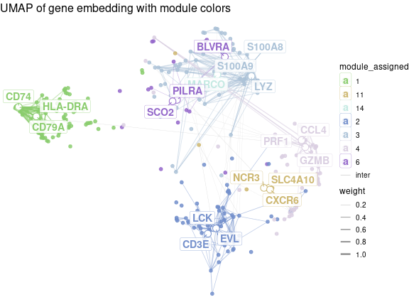
Gene UMAP showing the position of the top hub genes for each module. The edges are drawn between genes that are connected in the gene adjacency graph, while the colour is proportional to the weight of the edge.
Functional Analysis
Finally, Starlng uses the modules and the gene ordering to profile
the functional interpretation of their associated populations. The first
tool for this type of functional analysis is to perform Enrichment
Analysis. In our context, we use gprofiler2 to determine
the top 3 terms from the GO:BP database
using only the top 15 hub genes from each module.
We remark the presence of terms such as regulation of natural killer for module 11, T cell receptor signaling for module 2 that match the original annotation.
hub_genes <- hub_score_df %>%
group_by(module) %>%
slice_max(combined_score, n = 15) %>%
filter(module %in% selected_modules)
go_bp_enrichment <- lapply(selected_modules, function(module_name) {
used_genes <- hub_genes %>% filter(module == module_name) %>% pull(gene)
gprofiler2::gost(
query = used_genes,
sources = "GO:BP",
organism = "hsapiens",
domain_scope = "custom_annotated",
custom_bg = rownames(expr_matrix),
correction_method = "fdr"
)
})
#> No results to show
#> Please make sure that the organism is correct or set significant = FALSE
names(go_bp_enrichment) <- selected_modules
plot_enrichment_top_terms(
enrichment_result = filter_enrichment_results(go_bp_enrichment),
top_n = 3,
colour_column = "intersection_size"
)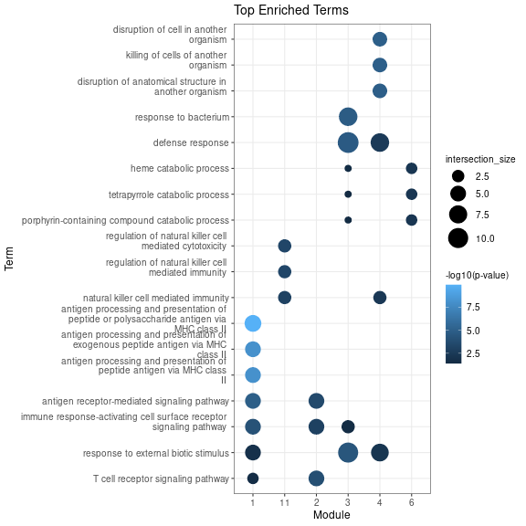
Dotplot showing the top 3 GO:BP terms for each module. The size is proportional to the intersection size, while the colour is proportional to the -log10(q-value).
Another approach is to derive the main Transcription Factors
associated with each module. For this, we use gprofiler2 to
compare the gene sets against the Transfac databset.
Starlng groups the TFs by their name (attempting to converge equivalent
names such as HNF4a and HNF4-alpha) and shows, in a dotplot, the
association between TFs and modules, along with information about the
intersection size.
We remark the presence of C\EBP-beta, a Transcription Factor that is associated to the differention of myleoif and lymphoid cells.
tfs <- get_transcription_factors(
gene_list = module_list,
organism = "hsapiens",
bg_genes = rownames(expr_matrix)
)
tf_stats <- get_tf_stats(tfs, include_intersection_set = TRUE)
tf_stats <- add_tf_hub_stats(tf_stats, hub_genes)
plot_module_tfs_bubbleplot(
tf_stats = tf_stats
)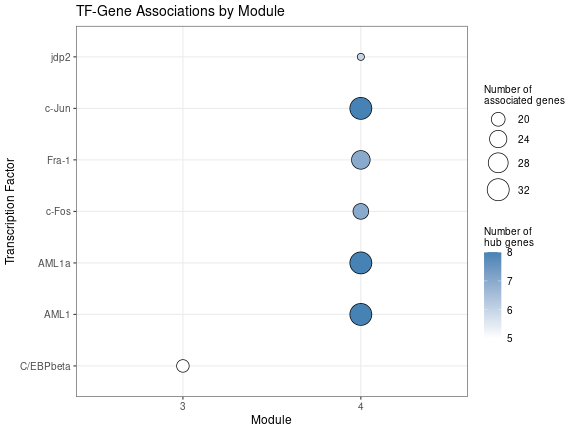
Dotplot showing the association between Transcription Factors and modules. The size is proportional to the intersection size.
An alternative is to visualise the interaction between the Transcription Factors as well as the major regulons in a graph plot.
tf_module_adj <- get_module_transitions(
trajectory_object = trajectory_object,
closest_module = closest_node_per_module[names(tfs)],
similarity_values = module_medians[names(tfs), , drop = FALSE]
)
tf_gene_graph <- get_tf_gene_network(
tf_stats = tf_stats,
module_adjacency = tf_module_adj,
top_n_factors = 7,
hub_genes = hub_genes
)
plot_module_tfs_ggraph(
module_tf_g = tf_gene_graph,
exclude_non_hub_genes = TRUE
)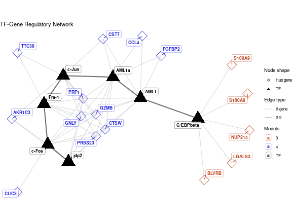
Graph showing the interaction between Transcription Factors and major regulons. The size of the nodes is proportional to the intersection size.
sessionInfo()
#> R version 4.4.0 (2024-04-24)
#> Platform: x86_64-pc-linux-gnu
#> Running under: Ubuntu 22.04.5 LTS
#>
#> Matrix products: default
#> BLAS: /usr/lib/x86_64-linux-gnu/openblas-pthread/libblas.so.3
#> LAPACK: /usr/lib/x86_64-linux-gnu/openblas-pthread/libopenblasp-r0.3.20.so; LAPACK version 3.10.0
#>
#> locale:
#> [1] LC_CTYPE=C.UTF-8 LC_NUMERIC=C LC_TIME=C.UTF-8 LC_COLLATE=C.UTF-8
#> [5] LC_MONETARY=C.UTF-8 LC_MESSAGES=C.UTF-8 LC_PAPER=C.UTF-8 LC_NAME=C
#> [9] LC_ADDRESS=C LC_TELEPHONE=C LC_MEASUREMENT=C.UTF-8 LC_IDENTIFICATION=C
#>
#> time zone: Europe/Bucharest
#> tzcode source: system (glibc)
#>
#> attached base packages:
#> [1] stats4 stats graphics grDevices utils datasets methods base
#>
#> other attached packages:
#> [1] patchwork_1.2.0 dplyr_1.1.4 ggplot2_4.0.3
#> [4] pbmcMultiome.SeuratData_0.1.4 pbmc3k.SeuratData_3.1.4 SeuratData_0.2.2.9002
#> [7] Seurat_5.1.0 SeuratObject_5.0.2 sp_2.1-4
#> [10] monocle3_1.3.7 SingleCellExperiment_1.26.0 SummarizedExperiment_1.34.0
#> [13] GenomicRanges_1.56.0 GenomeInfoDb_1.40.1 IRanges_2.38.0
#> [16] S4Vectors_0.42.0 MatrixGenerics_1.16.0 matrixStats_1.3.0
#> [19] Biobase_2.64.0 BiocGenerics_0.50.0 Starlng_1.0.0
#> [22] ClustAssess_1.2.0
#>
#> loaded via a namespace (and not attached):
#> [1] RcppAnnoy_0.0.22 splines_4.4.0 later_1.3.2 bitops_1.0-7
#> [5] tibble_3.2.1 polyclip_1.10-6 fastDummies_1.7.3 lifecycle_1.0.5
#> [9] sf_1.0-16 doParallel_1.0.17 pbmcapply_1.5.1 globals_0.16.3
#> [13] lattice_0.22-5 MASS_7.3-60 qualpalr_2.0.0 magrittr_2.0.3
#> [17] plotly_4.10.4 httpuv_1.6.15 otel_0.2.0 sctransform_0.4.1
#> [21] spam_2.10-0 spatstat.sparse_3.0-3 reticulate_1.37.0 cowplot_1.1.3
#> [25] pbapply_1.7-2 DBI_1.2.3 minqa_1.2.7 RColorBrewer_1.1-3
#> [29] abind_1.4-5 zlibbioc_1.50.0 Rtsne_0.17 purrr_1.0.2
#> [33] RCurl_1.98-1.14 ggraph_2.2.1 tweenr_2.0.3 rappdirs_0.3.3
#> [37] circlize_0.4.16 GenomeInfoDbData_1.2.12 ggrepel_0.9.5 irlba_2.3.5.1
#> [41] listenv_0.9.1 spatstat.utils_3.1-2 units_0.8-5 goftest_1.2-3
#> [45] RSpectra_0.16-2 spatstat.random_3.2-3 fitdistrplus_1.1-11 parallelly_1.37.1
#> [49] DelayedMatrixStats_1.26.0 leiden_0.4.3.1 codetools_0.2-19 DelayedArray_0.30.1
#> [53] ggforce_0.4.2 shape_1.4.6.1 tidyselect_1.2.1 Gmedian_1.2.7
#> [57] UCSC.utils_1.0.0 farver_2.1.2 viridis_0.6.5 lme4_1.1-35.3
#> [61] spatstat.explore_3.2-7 jsonlite_2.0.0 GetoptLong_1.0.5 e1071_1.7-14
#> [65] tidygraph_1.3.1 progressr_0.14.0 ggridges_0.5.6 survival_3.5-8
#> [69] iterators_1.0.14 foreach_1.5.2 tools_4.4.0 ica_1.0-3
#> [73] Rcpp_1.0.13 glue_1.7.0 gridExtra_2.3 SparseArray_1.4.8
#> [77] xfun_0.56 withr_3.0.3 fastmap_1.2.0 boot_1.3-30
#> [81] fansi_1.0.6 spData_2.3.1 digest_0.6.35 R6_2.6.1
#> [85] mime_0.12 wk_0.9.1 colorspace_2.1-1 Cairo_1.6-2
#> [89] scattermore_1.2 tensor_1.5 spatstat.data_3.0-4 utf8_1.2.4
#> [93] tidyr_1.3.1 generics_0.1.3 data.table_1.15.4 robustbase_0.99-2
#> [97] class_7.3-22 graphlayouts_1.2.2 httr_1.4.7 htmlwidgets_1.6.4
#> [101] S4Arrays_1.4.1 spdep_1.3-4 uwot_0.2.2 pkgconfig_2.0.3
#> [105] gtable_0.3.6 ComplexHeatmap_2.20.0 lmtest_0.9-40 S7_0.2.1
#> [109] XVector_0.44.0 htmltools_0.5.8.1 dotCall64_1.1-1 clue_0.3-65
#> [113] scales_1.4.0 png_0.1-8 knitr_1.51 rjson_0.2.21
#> [117] reshape2_1.4.4 nlme_3.1-163 nloptr_2.0.3 GlobalOptions_0.1.2
#> [121] cachem_1.1.0 proxy_0.4-27 zoo_1.8-12 stringr_1.5.1
#> [125] KernSmooth_2.23-22 parallel_4.4.0 miniUI_0.1.2 s2_1.1.6
#> [129] pillar_1.9.0 grid_4.4.0 vctrs_0.6.5 RANN_2.6.1
#> [133] slam_0.1-50 promises_1.3.0 xtable_1.8-4 cluster_2.1.6
#> [137] evaluate_1.0.5 magick_2.8.3 cli_3.6.6 compiler_4.4.0
#> [141] rlang_1.3.0 crayon_1.5.3 leidenbase_0.1.30 future.apply_1.11.2
#> [145] gprofiler2_0.2.3 labeling_0.4.3 classInt_0.4-10 plyr_1.8.9
#> [149] stringi_1.8.4 viridisLite_0.4.2 deldir_2.0-4 assertthat_0.2.1
#> [153] lazyeval_0.2.2 spatstat.geom_3.2-9 Matrix_1.7-0 RcppHNSW_0.6.0
#> [157] sparseMatrixStats_1.16.0 future_1.33.2 shiny_1.8.1.1 ROCR_1.0-11
#> [161] memoise_2.0.1 igraph_2.2.1 DEoptimR_1.1-3